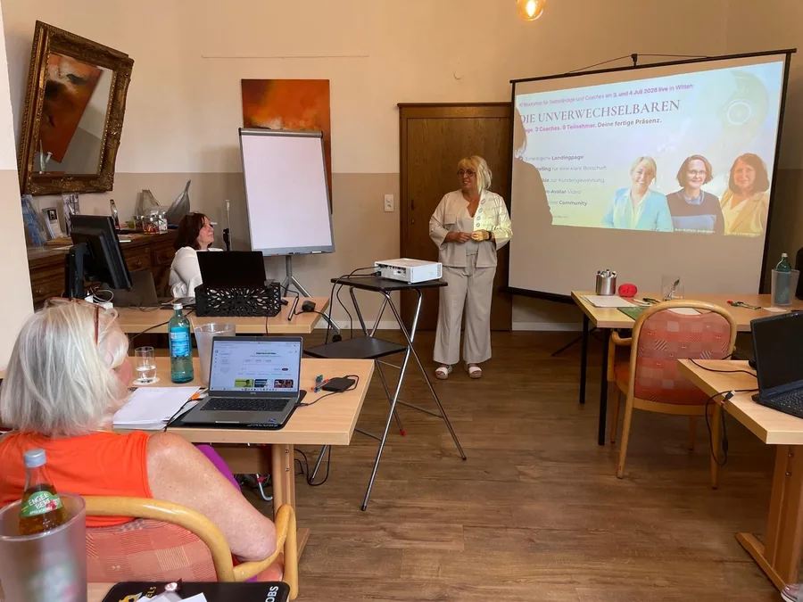

Ich suche eine Rednerin
Claudia als Rednerin buchen
Freie Trauung, Trauerfeier, private Lebensmomente.
Du buchst mich, und ich lerne die Menschen kennen, bevor ich über sie spreche.
Rednerin buchenZur Hauptseite für Unternehmen
Das Leben in gelebten Worten.
Für die Momente, in denen Worte zählen: Claudia spricht bei deiner Trauung, beim Abschied, bei deinem Fest. Und sie bildet die aus, die selbst diese Stimme sein wollen.Vorschlag

Freie Trauung, Trauerfeier, private Lebensmomente.
Du buchst mich, und ich lerne die Menschen kennen, bevor ich über sie spreche.
Rednerin buchen
Freie Rednerin und Hochzeitsrednerin, Trauerrednerin, Speakerin.
Vier Wege, und du sprichst ab dem ersten Tag selbst.
Ausbildung ansehenDas ist mal ein Saal mit dreihundert Gästen und mal ein Raum mit elf Menschen, die geweint haben.
Eine Trauerrede ist keine Rede über einen Verstorbenen. Sie ist das, was von ihm bleibt, gesagt vor den Menschen, die ihn gekannt haben.
Eine freie Trauung ist kein Programmpunkt zwischen Sekt und Fotos. Sie ist der Moment, an den sich alle erinnern, auch in zwanzig Jahren.
Das Transkript folgt mit der Aufnahme.
Audio von dir: „Was eine Rede für mich tragen muss“, Länge nach deiner Aufnahme (Text aus deiner PDF „Audio-Skripte und Platzierungen“, Platzierung „Rund ums Reden“).
Ein Gespräch, eine Rede, die nur zu euch passt, und am Tag selbst eine Stimme, die auch in der letzten Reihe ankommt. Den Text bekommst du vorher zum Lesen und Ändern.
Eine Zeremonie, die nur zu euch passt. Aus eurer Geschichte geschrieben, vorab zum Lesen und Ändern, und am Tag selbst getragen von einer Stimme, die auch in der letzten Reihe ankommt.
Ich berühre mit persönlichen Lebensgeschichten. Angehörige sollen lebendige Momente im Herzen spüren — so, wie der Mensch wirklich war. Nicht wie ein Lebenslauf klingt.
Überall, wo jemand vor Menschen steht und es ernst meint. Die Begrüßung eines Kindes. Erzähl mir den Anlass, dann sage ich dir, ob ich die Richtige bin.
Dazu runde Geburtstage, Hochzeitstage und Familienfeste.
Preise als Vorschlag von Vinci, Freigabe durch Claudia offen.
Vier Wege, und du sprichst ab dem ersten Tag selbst.
Der Beruf lässt sich lernen. Was sich nicht lernen lässt, ist der Wunsch, für andere Menschen die richtigen Worte zu finden. Den bringst du mit.
Du willst erst einmal hineinschnuppern? Dann ist der Workshop an einem Tag der kleinere Anfang. Die Wege hier darunter sind der ganze Weg.
Für alle, die vor Menschen sprechen wollen, wenn es zählt — bei Hochzeiten, Abschieden, Festen. Handwerk, Stimme und Haltung in einem Durchgang.
Wer Abschiede begleitet, braucht zwei Dinge: das Handwerk und einen Umgang mit dem, was die Arbeit mit einem selbst macht. Beides ist lernbar.
Du hast ein Fachgebiet. Was fehlt, ist das Thema, mit dem ein Veranstalter dich ankündigt — und eine Stimme, die einen Saal hält.
Trauungen liegen am Wochenende und im Sommer, Trauerfeiern werktags und ganzjährig. Wer beides anbietet, hat kein leeres Winterhalbjahr. Inhaltlich ist es derselbe Beruf: zuhören, eine Geschichte finden, sie sprechbar machen.
Alles live: vor Ort in Köln oder Witten oder live online in Echtzeit, in kleiner Gruppe mit höchstens sechs Menschen oder 1:1. Kein Videokurs zum Abrufen. Nach dem Praxisteil bekommst du ein Abschlusszertifikat von Claudia Conen.Vorschlag
KI darf hier als Werkzeug vorkommen: für Recherche, Struktur, Varianten oder Reflexion. Der Kern bleibt Zuhören, Lebensgeschichten verstehen, verantwortungsvoll formulieren, sprechbare Texte entwickeln und mit echter Präsenz vor Menschen stehen.
Preise als Vorschlag von Vinci, Freigabe durch Claudia offen. Gruppengröße „höchstens sechs“ als Vorschlag: deine heutigen Seiten nennen einmal sechs, einmal zwölf.
Voice-over für Imagefilm, Podcast, Kurs oder Telefonansage gehört zu „Claudia buchen“ auf der Hauptseite für Unternehmen. Dort stehen auch Reden für Unternehmensmomente und Moderation.Vorschlag
Claudia Conen spricht selbst bei Trauerfeiern, freien Trauungen und privaten Lebensmomenten, und sie bildet aus. Ihre Arbeit an Stimme, Wirkung und Handwerk kommt aus 37 Jahren als Coach und Trainerin. Zu hören unter anderem bei Sat.1 und RTL.
Claudia Conen, 2022. Taschenbuch und E-Book.
Zum BuchSie lebt in Witten und spricht im Ruhrgebiet und in Köln. Weitere Wege sind nach Absprache möglich.
Anzahl deiner freien Trauungen und Trauerreden bitte von dir. Stimmen von Familien, Paaren und Ausbildungsteilnehmenden, mit Quelle und Freigabe: bitte von dir. Auf deinen heutigen Seiten gibt es dazu noch keine.
Antworten mit „ich“ aus deinen heutigen Seiten, auf „du“ umgestellt; die übrigen Antworten neu.Vorschlag
Nein, es ist die Voraussetzung. Ich unterrichte nichts, was ich nicht selbst am Wochenende davor gemacht habe. Wer nur noch unterrichtet, verliert nach zwei Jahren den Kontakt zu dem, was im Raum wirklich passiert.
Dann geh oben auf „Rednerin buchen“. Du landest direkt bei deinem Anlass, und die Ausbildung kommt dort nicht vor.
Oft innerhalb weniger Tage. Ruf an, auch wenn es sehr schnell gehen muss. Wenn ich es nicht schaffe, sage ich es dir sofort und nenne dir jemanden aus meinem Netzwerk.
Der Einstieg ist ein Tagesworkshop: 590 € zzgl. MwSt. für die Trauerrede, 990 € zzgl. MwSt. für die freie Rede. Die ganze Ausbildung in kleiner Gruppe liegt je nach Weg zwischen 1.990 € und 4.900 € zzgl. MwSt., 1:1 darüber. Jede Ausbildungsseite nennt alle Preise mit Bruttobetrag, bevor du dich entscheidest.
Nein. Jede Ausbildung läuft live: vor Ort in Köln oder Witten oder live online in Echtzeit. Es gibt keinen Videokurs zum Abrufen. Du sprichst, die anderen hören zu, und die Rückmeldung kommt sofort.
Nach dem Praxisteil bekommst du ein Abschlusszertifikat von Claudia Conen. Ein IHK-Zertifikat gibt es hier nicht. Freier Redner ist keine geschützte Berufsbezeichnung, und Angehörige und Paare fragen nicht nach einem Zertifikat, sondern danach, ob du zuhören kannst und ob deine Rede stimmt.
Höchstens sechs Menschen auf eine Trainerin, oder 1:1. Jeder steht mehrfach auf und redet; die Rückmeldung kommt von Claudia, nicht aus einem Handout.
Ja, und die meisten tun es am Anfang. Trauerfeiern liegen werktags, Trauungen am Wochenende. Wer beides anbietet, kommt schneller auf eine tragfähige Anzahl von Aufträgen als wer sich auf einen Anlass beschränkt.
Ein Vorgespräch kostet nichts und verpflichtet zu nichts. Danach weißt du, ob das dein Weg ist — und ich weiß, ob ich die Richtige dafür bin.
Kostenloses VorgesprächDauer 30 Minuten. Du suchst eine Rednerin? Hier geht es zu den Anlässen.